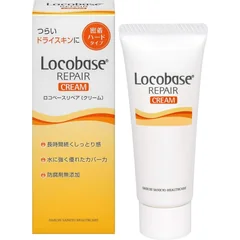
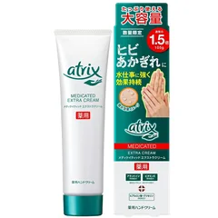
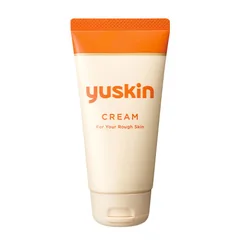

水仕事の前に

第一三共ヘルスケア
ロコベース リペアクリーム 30g
30g
¥1582税込・出典掲載価格
選び方と声
- 選ぶ条件：一日に何度も塗り直せない人。メーカーの説明は硬いタイプで水に強い。直径1cmほどを両手で温めてから伸ばす。
- 口コミには、手を洗っても水をはじくので塗り直しが減った、という声があった
気になる声気になる点：傷・はれもの・湿疹などの部位には使わない注意書き。値段が高めという声も
販売価格・容量・送料はリンク先でご確認ください
THE COSME EDIT / 2026.11.27
動画と同じ写真・名前・順番で並べています。見出しは順位ではなく、使う場面です。水仕事の前、まだ切れていない昼、切れてしまった夜を分けて選びました。3つ全部ではなく、いちばん困っている場面の1本で足ります。商品の表示はAmazonの商品ページ、悩みはガールズちゃんねるの相談で挙がっていた声に基づいています。
03 ITEMS 動画で紹介した商品
動画では商品のほかに、手袋の使い方、水気の拭き方、塗るタイミングなど、買わずにできることも扱っています。使う前に各商品の注意書きをご確認ください。肌に合わないときは使用をやめてください。深く割れて血が出る・はれる・水ぶくれがあるときは皮膚科へ。
価格は出典掲載時のものです。楽天の現在価格とは異なる場合があります。

第一三共ヘルスケア
30g
¥1582税込・出典掲載価格
選び方と声
気になる声気になる点：傷・はれもの・湿疹などの部位には使わない注意書き。値段が高めという声も
販売価格・容量・送料はリンク先でご確認ください

花王
105g
¥1177税込・出典掲載価格
選び方と声
気になる声気になる点：使いにくいという低めの評価もある。105gは数量限定の表示
販売価格・容量・送料はリンク先でご確認ください

ユースキン製薬
80g
¥645税込・出典掲載価格
選び方と声
気になる声気になる点：湿潤やただれのひどい人は使わない。重めでさっと塗りたい人には向かない、匂いが気になる、皮がむけて合わなかったという声も
販売価格・容量・送料はリンク先でご確認ください
SOURCE & NOTES
集計期間：2026年11月27日に確認
価格は2026年11月27日にAmazon商品ページで確認した税込価格です（掲載時点）。3つとも販売元はAmazon.co.jpです。楽天のリンクは同じ商品のページですが、店舗によって価格が違う場合があるので、容量をご確認ください。購入前にリンク先でご確認ください。